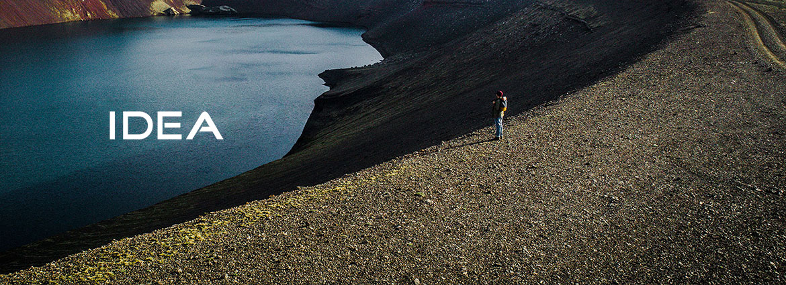
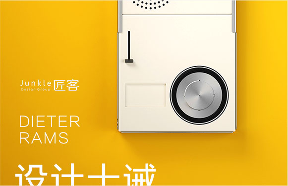
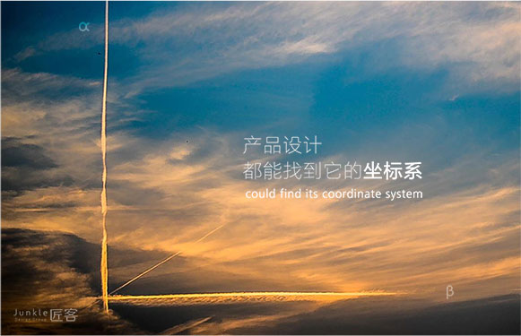
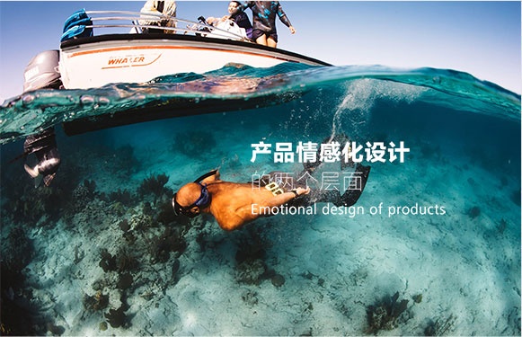
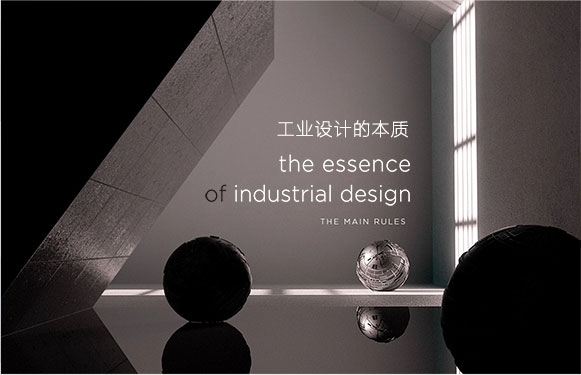
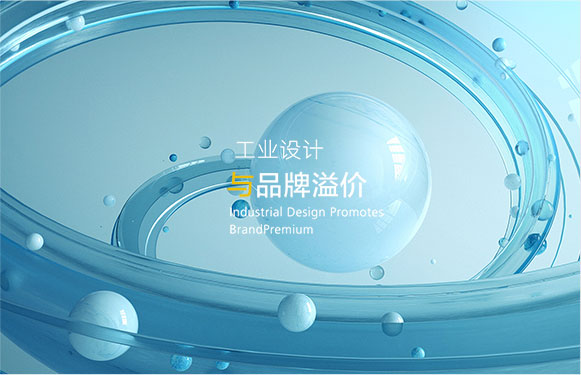

工业设计的“设计十诫”
优秀的设计应该是创新的可能性还远没有被穷尽。技术的发展不断为设计理念提供新的 起点，以提升产品可用性。但设计的革新总应与技术的革新相连..
2017-10-12
产品设计 都能找到它的坐标系
我们面对各种各样的设计，因领域、类别或者是价位的不同，每一个设计都有自己的生辰和背景，所以鲜有两个设计可面对面较高下的，我们不会直接说...
2017-10-12


产品情感化设计 的两个层面
用户之所以选择一款产品，首要的一点在于说产品的功能满足了用户或是产品的内容是用户想要的。在产品设计的工作内容中很重要的一点就是功能设计...
2017-10-12
工业设计 与品牌溢价
工业设计的本质，其实不是创意，而是沟通。它是一门设计者和使用者之间，通过产品实现无声沟通的学问。为什么这么说呢
2017-10-12


工业设计 与品牌溢价
工业设计：前所未有地被重视,的确工业设计已经成为企业谈转型谈升级必然话题，很多原来只做代工的企业，都建立起自己的研发设计团队，同时很多...
2017-10-12